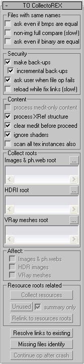
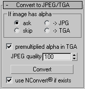

Rollout "TO CollectoREX" |
|
|  |
Files with same names Operations with files, having the same names as existing in collect folders Ask even if bmps are equal – show coparison dialog with operation variants "Replace", "Use existing" and "Rename" even if images are equal. Non-img full compare (slow!) – compare non-image files byte per byte, if their CRCs are equal. It's very slow if comparing files are big. If you are collecting only images, HDRI and IES-files - you can easily use this option. But still - it's not necessary. Ask even if binary are equal – show comparison dialog with operation variants for non-image files even if their are equal Security Data security Make back-ups – make backups before executing utility function changing scene Incremental back-ups – if backup file already exists create new file with name, which consists of: scene name, ordinal number and dual extention "max.backup": myscene.max.backup, myscene1.max.backup, myscene2.max.backup, etc. If this option is not checked, backup file (<scene name>.max.backup) will rewrite each time Ask user when file op fails – show full abort of current function request if file system error appears. Such errors appear if some files opened by another programs (e.g. by Photoshop), due some network or hard disk problems. If user agrees to abort function, function execution is aborted and user can locate and fix problem manually. If user answers "No", error will be ignored and copying of this file will be skipped. If user aborts function execution, he can undo all scene changes simply by reloading file: when aborting function utility does not save changes. What files (and how much) was copied during aborted function user can find out from function log. Reload while fix (slow!) – reload images while changing links. It takes much time and memory (sometimes extremally much!). But reload is not necessary. Now this option is almost useless. But still it's possible situation, when: while collecting, you meet file with same name as file in collect folder, and choose "Use existing"; but that files are different; you do not see changed texture after collection. Most Max entity properties update when needed, so described situation did not appear so far while testing, but it's still possible. So, if you want you can use this option, but be careful - it can even force system show Windows Virtual Memory Increase warning! Content Scene content Process medit-only content – also collect materials and textures that exist only in Material Editor and not applied to any scene object. Process XRef structure – process not only current scene but the whole Xref tree. Clear medit before proceed – clear Material Editor palette before function execution. If this option is checked, option Process medit-only content disabled. Ignore shaders – ignore ".cgfx", ".mi", ".psh", ".vsh", ".fx", ".fxh", ".axml", ".msl" files. Uncheck this option only if you use your own shaders not including or loading any files, and it is possible and nedded to collect them. Scan all tex instances also – also scan all TextureMap objects in scene. This option is added just in case standard algorithm miss something. Now it seems to be useless due no textures skipped by standard algorithm was found while testing. If you think that not all files was collected by utility, you can try to check this option. Unfortunately, this option does not resolve problems with Fry and Maxwell renderers. Collect Roots Collect folders. Button with elipsis launches folder select dialog Images & ph.web root – images (except HDRI) and IES-files collect folder. Shaders also go here if unchecked option Ignore shaders from category Content HDRI root – HDR-images collect folder VRay meshes root – Vray-meshes collect folder Affect What to process Images & ph.web – shaders will be processed also if Ignore shaders is checked HDR images VRay meshes Resource roots related Utilite functions relaited to collect folders. Only selected types of resources will be affected. Collect resources – execute "Collect" function of utility Unused - execute "Unused" function of utility; Summary only - if processing Xref-tree show only summary (don't show for every file) Relink to resources roots – execute "Relink to resources roots" function of utility Resolve links to existing – execute "Resolve links to existing" function of utility Missing files identity – execute "Missing files identity" function of utility Continue op after crash – continue last function, launched for Xref-tree but interrupted by Max crash. (see below – Continue op after crash) |
Rollout "Convert to JPEG/TGA" |
|
|  |
Convert ".tif", ".tiff", ".psd", ".png", ".tga" and ".bmp" images to JPEG. If it has alpha-channel utility offers operation variants.
If image has alpha (ask/skip/JPG/TGA) – if image has alpha-channel: ask user / skip / convert to JPEG anyway (alpha will be lost) / convert to TGA with RLE-compression (saving alpha) Premultiplied alpha in TGA – mix semitransparent pixels color with background color (TGA only) JPEG quality (JPEG only) Use NConvert© if exists – if NConvert© exists in utility folder ("maxroot\scripts\tocollectorex" or "maxroot\scripts\tocollectorex Demo" for demo version), windows root folder or in Windows\System32 folder, it will be used (as it is more accurate) for JPEG conversion instead of standard Max compressor Convert – execute Convert to JPEG/TGA function of utility; Affect options will be ignored |
Rollout "Help & config" |
|

|
The documentation and configuration Configuration automatically saved together with the scene and loads in scene load time. Besides it can be globally saved in ini-file. Such configuration called "global user defaults" or default settings. Default settings load, if the current scene does not contain configuration. Also it is possible to load them compulsorily or to reset them to initial values. Config Save config as defaults - save current configuration as default values Load config from defaults - load configuration from default values Clear defaults - reset default settings to initial state About - start a browser with a help file License search/request (in a demo - How to buy) - search the suitable license in: utility folder ("maxroot\scripts\tocollectorex"), 3dsmax root folder, Windows root folder and Windows\System32 folder. In a demo this button is substituted by button How to buy which outputs short information on reception of the complete version. |